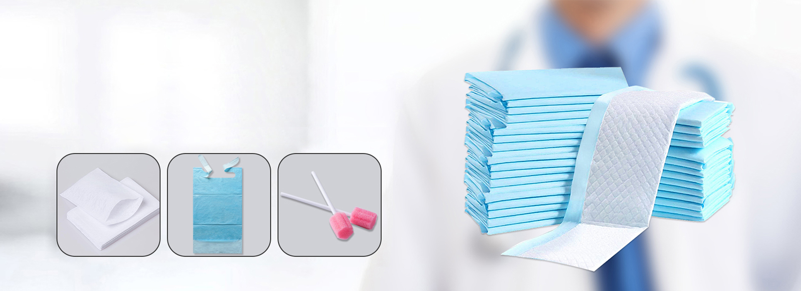

MEDICA 2025: The World's Leading Medical Trade Fair
Every year, MEDICA Düsseldorf brings together the global healthcare industry under one roof. As the world's largest medical trade fair, MEDICA attracts over 5,000 exhibitors and 130,000 visitors from more than 150 countries, making it the most important platform for international medical device manufacturers, suppliers, and procurement professionals to connect, innovate, and do business.
Newrise Medical was proud to participate in MEDICA 2025, held at Messe Düsseldorf, where our team showcased our comprehensive range of disposable medical products to a global audience. This year's exhibition saw particularly strong interest in our incontinence care and infection control product lines, reflecting broader market trends driven by aging populations and heightened hygiene awareness worldwide.
Products on Display
Our MEDICA 2025 booth featured four core product categories, each designed to meet the evolving needs of hospitals, nursing homes, and home care providers:
Incontinence Care Products
- Adult diapers and pull-ups — Multiple sizes and absorbency levels with super-absorbent polymer (SAP) cores for superior leak protection
- Disposable underpads — Tissue-top and non-woven surface options for bed and chair protection
- Washable underpads — Our newly launched eco-friendly line with TPU waterproof backing, designed for 300+ wash cycles
- Commode liners and bed protectors — Single-use hygiene solutions for patient care environments
Infection Control Solutions
- Disposable wash gloves — Non-woven, spunlace, and pre-moistened options for safe patient bathing
- PE aprons and isolation gowns — Lightweight protection for clinical and home care settings
- Medical face masks — ASTM-certified disposable masks with three-layer filtration
- Protective face shields — Full-face coverage for high-risk procedures
"We saw an impressive level of engagement at the Newrise booth. Visitors were especially interested in our washable underpad line and our flexible OEM capabilities. It's clear that the market is shifting toward both sustainability and customization." — Rachel, Sales Manager, Newrise Medical
Connecting with a Global Network
During MEDICA 2025, our team held productive discussions with distributors and procurement representatives from more than 30 countries, including:
| Region | Key Markets | Primary Interest |
|---|---|---|
| Europe | Germany, UK, France, Italy, Spain | Incontinence care, infection control |
| North America | USA, Canada | Disposable wash gloves, OEM services |
| Asia-Pacific | Japan, Australia, Southeast Asia | Medical blankets, patient transfer |
| Middle East & Africa | UAE, South Africa, Saudi Arabia | Bulk incontinence supplies |
| South America | Brazil, Chile, Colombia | Cost-effective disposables, private label |
These conversations reinforced a key insight: while pricing remains important, modern medical supply distributors are increasingly prioritizing quality certifications, manufacturing reliability, and customization flexibility over lowest-cost sourcing alone.
Market Insights from the Show Floor
MEDICA 2025 provided valuable visibility into several emerging trends that will shape the global medical supply market:
- Sustainability matters more than ever. Buyers are actively seeking eco-friendly alternatives — from biodegradable packaging to reusable products like washable underpads — without compromising on performance or cost.
- Home care is booming. The shift from institutional care to home-based care is creating new demand for easy-to-use, single-use hygiene products that family caregivers can manage without clinical training.
- Custom branding is a differentiator. Distributors are increasingly requesting OEM and private-label services to build their own branded product lines, especially in competitive markets like Europe and North America.
- Regulatory compliance is non-negotiable. With tightening regulations across multiple regions, ISO 13485, CE, and FDA certifications have become baseline requirements rather than competitive advantages.
💡 Key Takeaway for Distributors
- Partnering with an ISO 13485-certified manufacturer with 20+ years of experience reduces supply chain risk
- Flexible MOQ and custom packaging options enable market testing without large upfront investment
- A diversified product portfolio under one supplier simplifies procurement and reduces vendor management overhead
What's Next for Newrise Medical
Following the strong response at MEDICA 2025, Newrise Medical is expanding its production capacity for washable underpads and accelerating the development of new eco-friendly product lines. Our team is also deepening relationships with the distributors we met in Düsseldorf, with several OEM partnerships already in the negotiation phase.
We look forward to connecting with more partners at future international exhibitions. If you missed us at MEDICA 2025, our team is always available for product inquiries, sample requests, and factory visits at our 40,000㎡ facility in Changzhou, China.